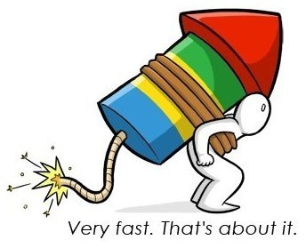

Web caching là việc sao lưu các bản sao tài liệu web sao cho đáp ứng nhanh nhất tới người dùng. Về mặt ưu điểm thì khỏi nói, nó giúp giảm thiểu băng thông, giúp người dùng tải nhanh website và có trải nghiệm tốt hơn, còn server thì giảm được gánh nặng.

Thử ví dụ thực tế với Web nhé
Đơn giản thì như thế này, người duyệt web giống như người đi ăn phở, còn server giống như quán phở. Nếu server không được caching cũng giống như khách hàng đến gọi 1 bát phở sau đó thằng tiểu nhị mới vào bảo thằng đầu bếp làm bát phở đó. Sau đó bạn phải đợi 1 khoảng thời gian nào đó rồi người ta mới đưa ra bát phở cho bạn. Nếu lúc đó bạn đói thì bạn sẽ cảm thấy khá lâu và không hài lòng lắm đúng không? Trường hợp còn lại, quán đó đã làm sẵn đầy đủ mọi thứ cho nhiều bát phở có sẵn, để đến khi bạn đến họ chỉ việc bê ra cho bạn chan chan húp húp, bạn cảm thấy khá nhanh và thấy vui vẻ hơn đúng không? Việc đó tương tự với việc cache ở server bằng việc tạo **các tài liệu tĩnh có sắn **và người dùng request đến thì chỉ cần gửi tài liệu đó đáp trả cho người dùng là xong, khỏe re.
Browser caching
Khi bạn ăn phở thì bạn thường sẽ gọi thêm rau hoặc thêm ít ớt, tỏi ngâm gì đó, nó cũng giống như các file static như ảnh ọt, css, script,… nó sẽ được mang ra cùng với bát phở của bạn. Nhưng nếu bạn ăn thêm bát phở nữa với vẫn rau đó, ớt đó thì có thể họ chỉ bê cho bạn thêm bát phở nữa vì rau rợ, ớt iếc vẫn còn đó và bạn có thể sử dụng tiếp. Cái này nó cũng gần giống như caching ở trình duyệt vậy, các dữ liệu tình có thể sử dụng nhiều lần và được lưu ở máy người dùng mà không cần phải request đến server.
Dữ liệu đã lỗi thời
Tiếp, có bạn sẽ hỏi làm trước phở thế thì để lâu phở trương hết thì ai mà ăn được? Đúng thế, lúc đó của hàng lại nghĩ thêm trò nữa là chỉ làm 5 bát phở rồi đợi 10 phút nữa mới làm thêm 5 bát phở khác và bát phở sau có thể khác bát trước tùy từng thời điểm. Nếu bán không hết họ sẽ đổ đi, để đánh đổi điều đó thì khách hàng sẽ vui hơn vì không phải chờ. Việc này cũng tương tự như việc cấu hình thời gian tối đa cache để sau khoảng 1 thời gian nào đó thì server sẽ tạo lại bản sao mới để cập nhật với thời điểm hiện tại.
Có một số trường hợp chúng ta không thể caching toàn bộ mọi thứ
À thế một thằng khách hàng khác vào quán đó và gọi 1 bát phở không hành nhiều thịt ít mì chính thì sao? Lúc đó nếu quán ăn đó không có sẵn họ sẽ phải làm lại nguyên 1 bát phở đó và người dùng chắc chắn phải đợi để có bát phở như ý muốn của họ. Nó cũng giống như việc bạn vào 1 website sau đó bạn tìm kiểm với một từ khóa mà chưa ai tìm bao giờ thì đảm bảo server sẽ phải mất thời gian xử lý sau đó mới phản hồi cho bạn đồng thời tạo 1 bản cache cho request đó. Sau đó một người khác lại vào và tìm kiểm với từ khóa giống của bạn thì lúc này có thể server chỉ cần trả về tài liệu tĩnh đã được cache trước đó.
Tóm váy lại
Đây là các kĩ thuật caching phổ thông và ở hầu hết các website từ bé đến lớn đều sử dụng, dễ dàng cài đặt. Ngoài ra còn 1 số kĩ thuật khác mình không nhắc đến bởi mình cũng chả biết mấy và thường nó được sử dụng cho các hệ thống vừa và lớn và thường khó cài đặt hơn.
Đó chỉ là lý thuyết, còn làm thế nào để làm điều đó mình sẽ nói ở một bài khác.
À tiện nói thêm một tí nữa có liên quan chút đến caching?
À thì khi khách ở xa quán phở đó muôn order 1 bát phở thì sao? Giả sử quán ở Long Biên, khách ở tận Cầu Giấy. Nếu ship phở từ Long Biên về Cầu Giấy thì phở trương cmn rồi! Lúc đó cửa hàng nhận thấy cần phải mở thêm 1 cơ sở nữa ở Cầu Giấy để phục vụ cho khách hàng quanh đó. Với Web cũng vậy, với các request ở rất xa máy chủ thì kể cả có dùng caching thì cũng không thể cải thiện được tốc độ tốt nhất, nên lúc đó người ta nghĩ ra CDN để serve các dữ liệu tĩnh hay thêm cả load balancing (cân bằng tải) để phân chia các truy vấn ra nhiều cụm máy chủ khác nhau.